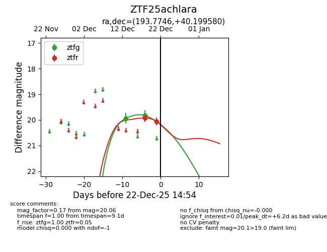
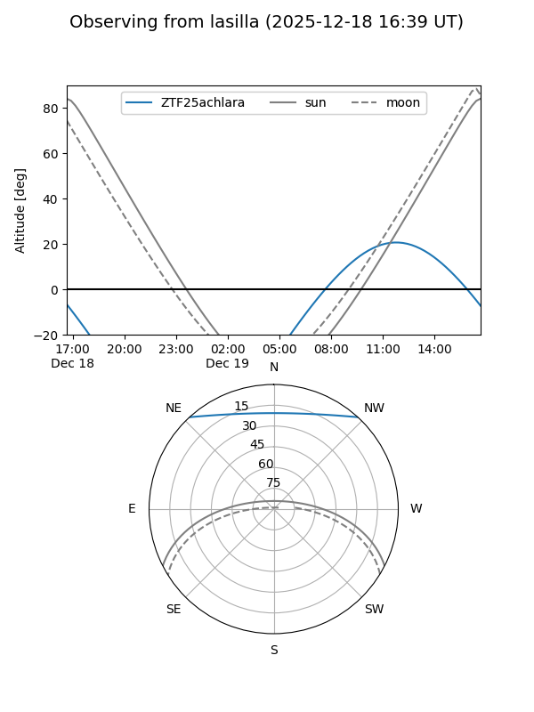
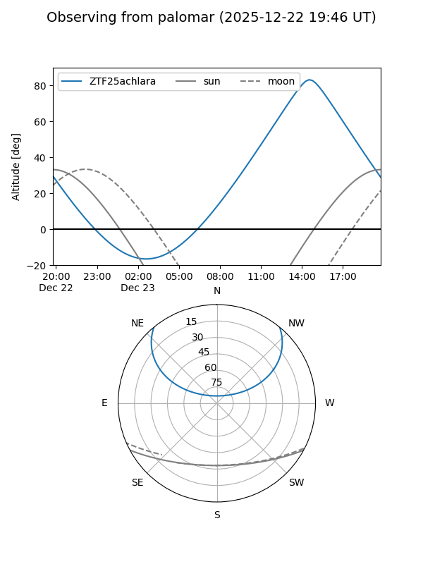
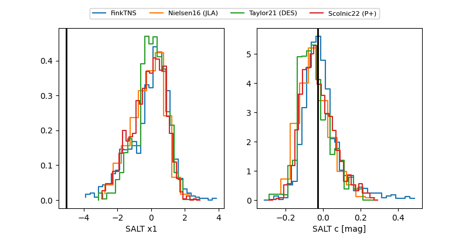

ZTF25achlara
Target ZTF25achlara at 2025-12-22 14:56
Aliases and brokers:
FINK: fink-portal.org/ZTF25achlara
Lasair: lasair-ztf.lsst.ac.uk/objects/ZTF25achlara
ALeRCE: alerce.online/object/ZTF25achlara
alt names
ZTF25achlara (ztf,fink_ztf)
Coordinates:
equatorial (ra, dec) = 193.7746,+40.19958
equatorial (HMS+DMS) = 12:55:05.92,+40:11:58.49
galactic (l, b) = (119.8449,+76.90672)
Flags:
Photometry:
last ztfg=19.83, ztfr=20.06
2 ztfg, 2 ztfr detections
Lightcurve

Visibility


Additional plots
